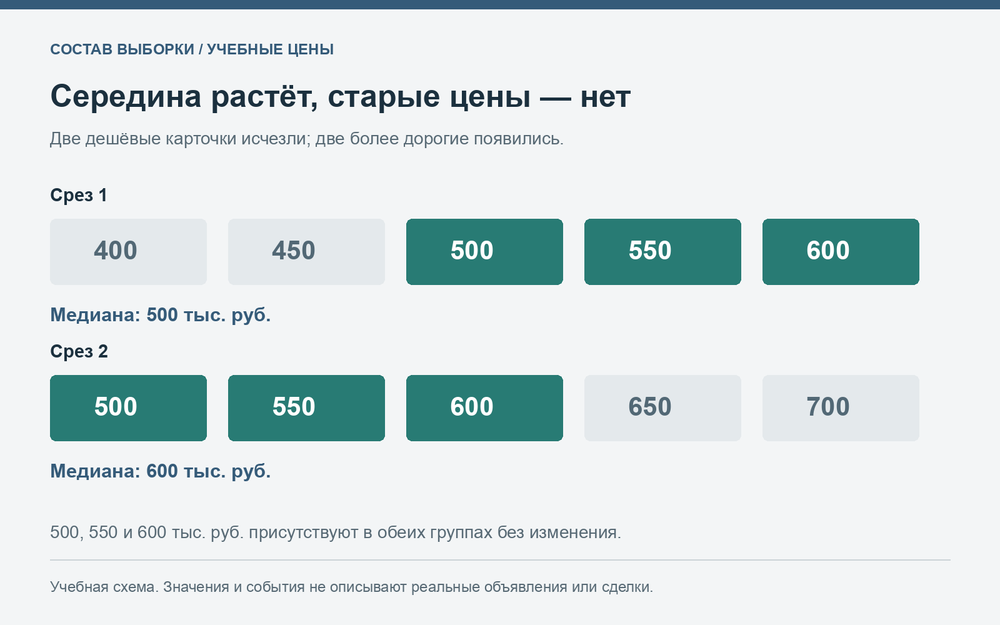
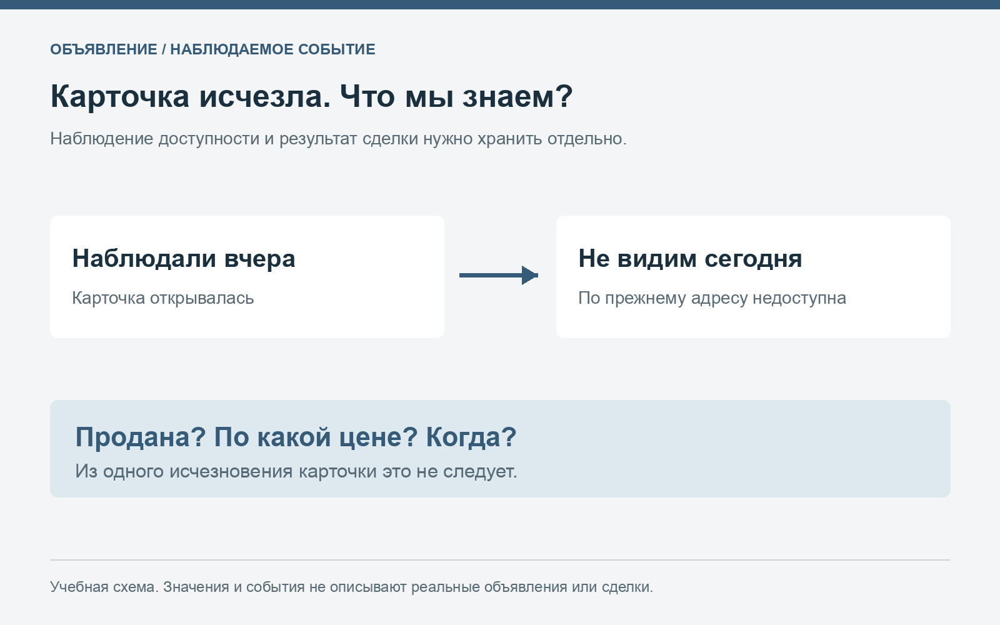

Как наблюдать за ценами автомобилей и не принять смену объявлений за рост рынка
Сравнение двух ценовых сводок кажется простой задачей: вчера типичная машина стоила одну сумму, сегодня другую. Но каталоги объявлений постоянно меняются. Одни карточки исчезают, другие появляются, третьи редактируют. Изменение середины такой подборки не всегда означает изменение цен у тех же продавцов.
Чтобы наблюдение было полезным, нужно сначала определить, что именно сравнивается. Текущий состав предложения и изменение цен одних и тех же автомобилей — два разных вопроса. Разделив их, можно аккуратнее описывать рынок и принимать более обоснованные решения о покупке или продаже.
1. Что даёт разовый срез каталога
В сводке, опубликованной по адресу https://днр-авто.рф/ и проверенной 20 октября 2026 года, для Skoda Octavia указаны 48 объявлений и типичная цена около 840 тысяч рублей. Для Lada Приора — 45 объявлений и около 350 тысяч, для Volkswagen Passat — 38 и около 960 тысяч рублей.
Это полезная фотография предложения на конкретную дату. Она показывает порядок цен и число карточек в выбранных модельных группах. При этом диапазоны годов широкие: у Octavia представлены 1999–2021 годы, у Passat — 1992–2021 годы. Такие категории нельзя считать полностью однородными.
Из разового среза нельзя вывести скорость продаж или фактическую сумму сделки. Наличие объявления означает, что предложение наблюдается в каталоге. Его исчезновение в следующий момент само по себе не объясняет, что произошло с автомобилем.
2. Сформулируйте вопрос до сбора данных
Для покупателя вопрос может звучать так: какие предложения нужной версии сейчас помещаются в мой бюджет? Для продавца — как моё предложение выглядит относительно сопоставимых машин? Для наблюдения за динамикой — что изменилось в определённой группе между двумя датами?
Каждый вопрос требует своего способа сравнения. Если цель — найти конкретный автомобиль, важны состояние и условия отдельного предложения. Если цель — описать изменение каталога, нужно удерживать правила отбора и отслеживать состав данных. Один показатель не решает все задачи одновременно.
Запишите критерии заранее: поколение, тип кузова, двигатель, коробка и диапазон года, когда они важны для сравнения. Затем сохраняйте эти критерии при повторном наблюдении. Если правило изменилось, это тоже изменение методики, которое должно быть видно в итоговом описании.
3. Почему медиана может вырасти без изменения старых цен
Возьмём учебный ряд из пяти предложений: 400, 450, 500, 550 и 600 тысяч рублей. Медиана равна 500 тысячам. На следующую дату две дешёвые карточки исчезли, а две новые появились с ценами 650 и 700 тысяч. Вторая подборка выглядит так: 500, 550, 600, 650 и 700 тысяч рублей. Её медиана — 600 тысяч.
У трёх оставшихся автомобилей цены в этом примере не изменились. Сдвиг середины связан с заменой части наблюдений. Это не реальная статистика каталога, а специально построенная арифметическая иллюстрация. Она показывает, почему по одному агрегированному числу нельзя уверенно объяснять причину изменения.

Учебный пример смены состава: зелёные значения остаются в обеих подборках, остальные карточки меняются. Цены общих наблюдений постоянны.
Когда вы видите похожую ситуацию в собственном дневнике, разделите два результата: как изменился весь наблюдаемый набор и как изменились цены у карточек, присутствующих в обе даты. Эти результаты могут отличаться и при этом оба корректно описывать свои данные.
4. Что нужно записывать в дневник наблюдений
Для каждой карточки достаточно нескольких полей: дата, устойчивый идентификатор или ссылка, точная версия, год, заявленный пробег, цена и существенные примечания. Если сведения не указаны, оставляйте понятную отметку, а не ноль, который выглядит как измеренное значение.
Ссылка помогает повторно открыть карточку, но не всегда является надёжным идентификатором автомобиля. Продавец может создать новое объявление. При самостоятельном учёте полезно замечать очевидные повторы по доступным публичным признакам и отдельно фиксировать сомнения, не выдавая предположение о дубле за установленный факт.
Не нужно собирать лишние личные данные продавцов для анализа цен. Для этой задачи обычно важнее характеристики автомобиля и история самой карточки. Если публикуете свой набор наблюдений, продумайте, какие поля действительно необходимы читателю для проверки выводов.
5. Отдельно учитывайте цену и доступность карточки
У наблюдаемого объявления может измениться цена, текст или набор фотографий. Карточка может перестать открываться. Эти события стоит хранить раздельно, потому что они отвечают на разные вопросы.
Если объявление исчезло, корректная запись без дополнительных подтверждений — «больше не наблюдается по прежнему адресу» или «снято с публикации», если именно это сообщает площадка. Утверждение «продано» требует отдельного основания. Последняя указанная цена при этом не становится подтверждённой суммой сделки.

От наблюдаемого события к выводу: между исчезновением карточки и утверждением о продаже остаётся недостающая информация.
Такое разделение особенно важно для разговоров о ликвидности. Большое число объявлений может сочетаться с разной частотой появления, снятия и продажи автомобилей. По количеству текущих карточек невозможно самостоятельно восстановить все эти процессы.
6. Сравнивайте весь набор и общие наблюдения
При повторном срезе посчитайте, сколько карточек сохранилось, сколько появилось и сколько перестало наблюдаться. Затем отдельно рассмотрите цены у сохранившихся карточек. Это поможет описать структуру изменения, не смешивая её с изменениями отдельных предложений.
В учебном примере из пяти карточек сохранились три, исчезли две и появились две. Для общего набора медиана выросла с 500 до 600 тысяч рублей. Для трёх общих наблюдений цены не изменились. Фраза «в нашей подборке изменилась структура предложения» лучше соответствует таким данным, чем утверждение о всеобщем подорожании.
У этой процедуры тоже есть ограничение: общие наблюдения — оставшаяся часть предложения. Она может отличаться от машин, которые быстро перестали наблюдаться. Поэтому даже аккуратное сравнение одинаковых карточек не превращается автоматически в показатель всех сделок рынка.
7. Не ограничивайтесь одной серединой
Медиана показывает положение середины ряда, но не ширину разброса. Дополнительная информация появляется, когда рядом видны число наблюдений, центральный диапазон и основные отличия между версиями. Если группа смешанная, лучше сначала изучить её состав.
В руководстве NIST по диаграммам box plot центральная часть данных представлена между нижним и верхним квартилями с отдельной отметкой медианы. Этот способ помогает показать положение и разброс вместе. Для небольших подборок следует также указывать метод вычисления границ.
График не устанавливает причины различий между автомобилями. Широкий диапазон может стать поводом проверить поколение, двигатель и состояние, но не позволяет выбрать единственное объяснение без дальнейшего изучения. В узком диапазоне также могут скрываться важные индивидуальные различия.
8. Учитывайте пропуски и изменения описаний
Заявленный пробег, комплектация и история работ могут появиться в тексте позже. Иногда меняется год или версия, указанная в карточке. Если автоматически сравнивать такие записи как неизменные, легко получить ошибочное впечатление о сопоставимости.
Храните важные уточнения вместе с датой. Если автомобиль исключён из подборки из-за исправленной характеристики, это изменение правил включения конкретной строки, а не обязательно ценовое событие. В небольшом наборе несколько таких изменений способны заметно повлиять на результат.
Не заполняйте неизвестные признаки догадками только ради красивой таблицы. Пометка «нет данных» сохраняет ограничение видимым. Если пропусков много, это само по себе важная характеристика качества наблюдения и причина осторожнее формулировать выводы.
9. Как написать вывод, который можно проверить
Хороший вывод содержит дату, критерии и размер наблюдаемой группы. Например: «В нашей подборке сопоставимых объявлений между двумя датами изменилась медиана; при этом часть карточек была заменена новыми». Затем можно отдельно описать общие наблюдения и ограничения данных.
Вымышленный числовой пример следует явно назвать учебным. Наблюдаемые цены продавцов — именно ценами предложения. Предположение о причине изменения — предположением. Разделение этих уровней помогает читателю понять, что подтверждается исходными строками, а что пока требует дополнительных сведений.
Избегайте слишком точных выводов по маленькой группе. Разница в несколько тысяч рублей может зависеть от одной новой карточки или от способа расчёта. Для практического выбора полезнее объяснить масштаб неопределённости, чем создавать впечатление точной оценки из неполных данных.
10. Что это меняет для покупателя и продавца
Покупателю дневник помогает помнить, какие машины уже рассмотрены и какие вопросы остались открытыми. Продавцу — видеть, как его карточка соотносится с сопоставимыми предложениями. Обоим полезно отделять собственную задачу от общего заголовка о «росте» или «падении» рынка.
Последний этап остаётся индивидуальным: проверка конкретного автомобиля, обсуждение подтверждённых особенностей и расчёт собственного бюджета. История объявлений даёт контекст, но не заменяет осмотр и не устанавливает будущую сумму сделки.
Наблюдать за рынком полезно, когда сохраняется связь между цифрой и тем, из каких объявлений она получена. Дата, состав группы и история карточек помогают объяснить изменения точнее, чем одна типичная цена без контекста.
Сопоставимый набор предложений можно собрать отдельно на Авто.ру. Для сравнения фиксируйте одну дату, одинаковые требования к версии и доступность каждой карточки; результаты разных подборок сохраняйте раздельно.
О данных: фактический срез каталога приведён на 20.10.2026. Пятиэлементные ряды и схемы полностью учебные. Цены предложения не равны подтверждённым ценам сделок. Материал подготовлен в рамках продвижения указанного автомобильного ресурса.